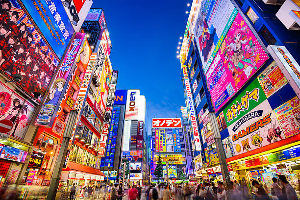

Tokyo,Japan
Why do I want to go there?
When it comes to the greatest cities in the world, you cannot do better than Tokyo. A juxtaposition of deep tradition and fast-paced, modern energy, Tokyo, the capital city of Japan, is one of the best places to visit in Asia. It is home to the Imperial Palace and the seat of Government and Parliament, as well as luxury hotels, Michelin-starred restaurants, and fantastic shopping. Located in East-Central Honshu, the largest of Japan's main islands, this heavily populated city serves as a great base from which to explore other parts of the country.One of the world's most modern cities in terms of its infrastructure and design – due largely to the 1923 earthquake and the devastation of WWII – Tokyo also holds the title of the world's most expensive city in which to live. Fortunately, it's also one of the easiest to get around thanks to its superb rail and subway networks.The cultural side of Tokyo is famous for its numerous things to do and top attractions, including museums; festivals; internationally noted cuisine; and professional sports clubs, including baseball, football, and traditional Japanese pursuits like sumo wrestling. It's also a city rich in music and theater, with numerous venues featuring everything from Japanese modern dramas to symphony orchestras and pop and rock concerts. Explore the city with our list of the top things to do in Tokyo.
What is in Tokyo?
A paradise-like oasis of green in the heart of busy Tokyo, Ueno Park is the city's largest green space and one of its most popular tourist attractions. In addition to its lovely grounds, the park also boasts numerous temples and museums to explore.Criss-crossed by pleasant gravel paths, this 212-acre park includes highlights such as a trip on a small boat on the reed-fringed Shinobazu pond, around a little island with its Bentendo Temple. Be sure to also visit the 17th-century Toshogu Shrine, with its 256 bronze and stone lanterns.Another highlight here is Ueno Zoo. Opened in 1882, it is Japan's oldest zoo, and is famous for the pandas presented by the People's Republic of China.While it's a large attraction and houses more than 3,00 animals representing some 400 species, having a fun monorail connecting its various components can help speed up a visit.The Aqua-Zoo, one of the largest aquariums in Asia, is also worth a visit, especially if you're traveling with kids.
Click here to go back and read about more places.
